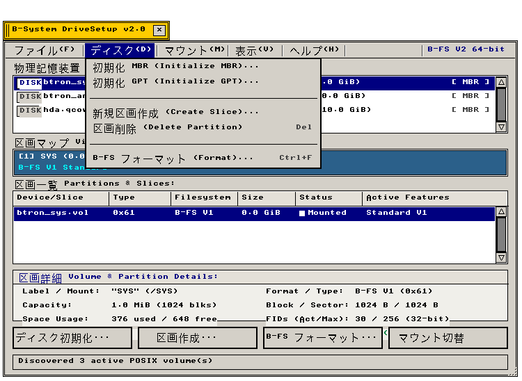
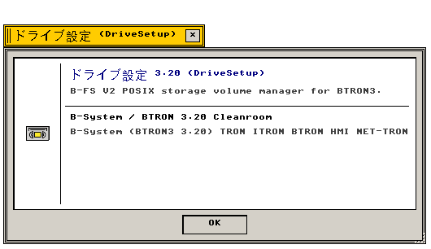

← アプリケーション一覧 (Applications Index)
ボリューム（Volumes） — ボリューム（Volumes / DriveSetup）は、POSIX生ストレージデバイスの検出、MBR/GPT区画テーブルの初期化、B-FS V1/V2フォーマット、およびボリュームのマウント・アンマウントを統合管理するB-System標準ストレージ管理ユーティリティです。
"Comprehensive storage device and partition manager for real POSIX block images, MBR/GPT partitioning, B-FS V1/V2 formatting, and non-blocking volume mount lifecycle."
画面プレビュー (Screen Preview)

実機描画フレームバッファより自動抽出されたボリューム管理 Volumes (ディスクメニュー展開・区画操作一覧)

実機描画フレームバッファより自動抽出された透過バージョン情報ダイアログ (About Volumes)
概要 (Overview)
ボリューム（Volumes）（C99実装名：src/apps/b_drivesetup.c、ウィンドウ標題：B-System DriveSetup v2.0）は、B-System環境における物理・仮想ブロックストレージ、パーティションスライス、およびB-FSファイルシステムの包括的な構成・保守を司るコアシステムアプリケーションです。
"Volumes (implemented as b_drivesetup.c) serves as the definitive workstation storage utility in B-System, orchestrating physical and virtual block devices, partition slices, and modern B-FS filesystems."
BTRON3 3.20ヒューマンマシンインタフェース（HMI）指針に完全準拠し、伝統的な3Dベベル加飾、Classic Navy選択ハイライト、および動的リサイズ追従型レイアウトエンジン（WND_ATTR_RESIZE）を搭載しています。NASA/JPL Rule 3（実行時動的メモリ割り当ての完全排除）を徹底し、静的構造体 DriveSetupState 内で全状態を確定論的に管理します。
"Fully conforming to BTRON3 3.20 HMI standards, Volumes incorporates classic 3D beveled chrome, navy selection accents, and a dynamic responsive geometry engine. Adhering strictly to NASA/JPL Rule 3, all operations run deterministically on static non-allocating buffers without runtime heap allocation."
1. メニュー構造と操作体系 (Menu Architecture & Operations)
Volumes は APP_MENU_BAR 共通エンジンを用いた標準メニューバー（Classic 3Dスタイル）を備え、キーボードショートカットおよびマウスイベントにより迅速なディスク操作を提供します。
"Standard hierarchical application menu bar (APP_MENU_BAR) providing rapid disk operations via keyboard shortcuts and mouse clicks."
| メニュー階層 (Menu Hierarchy) |
短縮キー (Key) |
機能説明 (Functional Description) |
C99 実装コマンド (Command Binding) |
| ファイル(F) ▶ 再認識 (Rescan Storage) |
Ctrl+R |
接続中の生ストレージデバイス（btron_sys.vol、btron_anders.vol、QCOW2等）を走査して一覧を再構築 |
DSCMD_FILE_SCAN / b_drivesetup_scan_devices() |
| ファイル(F) ▶ 新規イメージ作成... (New Image) |
Ctrl+N |
指定パスに新規仮想ディスクイメージファイル（.vol）を作成・フォーマット |
DSCMD_FILE_CREATE_IMG / DIALOG_CREATE_IMAGE |
| ファイル(F) ▶ 閉じる (Close) |
Ctrl+W |
ボリューム管理ウィンドウを閉じ、リソースを解放 |
DSCMD_FILE_CLOSE / cls_wnd() |
| ディスク(D) ▶ 初期化 MBR... (Initialize MBR) |
— |
選択中デバイスにMBR（マスターブートレコード）形式のパーティションテーブルを構築 |
DSCMD_DISK_INIT_MBR / PART_SCHEME_MBR |
| ディスク(D) ▶ 初期化 GPT... (Initialize GPT) |
— |
選択中デバイスにGUIDパーティションテーブル（GPT）を構築（B-FS標準GUID対応） |
DSCMD_DISK_INIT_GPT / PART_SCHEME_GPT |
| ディスク(D) ▶ 新規区画作成... (Create Slice) |
— |
ディスク内の未割り当て領域から新規パーティションスライスを切り出し |
DSCMD_PART_CREATE / DIALOG_CREATE_SLICE |
| ディスク(D) ▶ 区画削除 (Delete Partition) |
Del |
選択中のパーティションスライスを解放（警告確認ダイアログ保護） |
DSCMD_PART_DELETE / WRITE_OP_DELETE_PARTITION |
| ディスク(D) ▶ B-FS フォーマット... (Format B-FS) |
Ctrl+F |
B-FS V2 / V1 ファイルシステムで区画を書式化（WALジャーナル、64-bit FID等設定） |
DSCMD_PART_FMT_BFS / DIALOG_FORMAT_BFS |
| マウント(M) ▶ マウント (Mount) |
Ctrl+M |
選択したファイルシステム区画をB-System名前空間（/SYS、/DATA等）へ接続 |
DSCMD_MOUNT_VOLUME / b_drivesetup_mount() |
| マウント(M) ▶ アンマウント (Unmount) |
Ctrl+U |
マウント中の区画を安全に切り離し、未書き込みバッファをフラッシュ |
DSCMD_UNMOUNT_VOLUME / b_drivesetup_unmount() |
| マウント(M) ▶ /SYS を開く (Mount System) |
— |
基本システムボリューム btron_sys.vol (B-FS V1) を即座にマウント |
DSCMD_MOUNT_SYS |
| マウント(M) ▶ /ANDERS を開く (Mount Anders) |
— |
ユーザー領域ボリューム btron_anders.vol (B-FS V1) を即座にマウント |
DSCMD_MOUNT_ANDERS |
| マウント(M) ▶ /CHOKANJI を開く (Mount Chokanji) |
— |
超漢字 / B-right/V 互換ボリューム（hda.qcow2）をマウント |
DSCMD_MOUNT_QCOW2 |
| 表示(V) ▶ 更新 (Refresh) |
F5 |
区画使用率、ブロック空き領域、およびマウント状態テレメトリを即時再描画 |
DSCMD_VIEW_REFRESH |
| ヘルプ(H) ▶ ドライブ設定について (About) |
— |
Nano About Box（透過版バージョン情報・著作権クレジット表示）をポップアップ |
DSCMD_HELP_ABOUT / open_drivesetup_about_window() |
2. UI幾何学とレイアウトエンジン (UI Geometry & Responsive Layout Engine)
Volumes のメインウィンドウは、初期寸法 740×512px、最小寸法 520×420px で動作し、ユーザーによるウィンドウ伸縮（WND_ATTR_RESIZE）に対して内部矩形を完全再計算する専用幾何学エンジン drivesetup_calc_layout() を内蔵しています。
"The main application window operates with a default geometry of 740×512px (minimum 520×420px), driven by the dedicated drivesetup_calc_layout() geometry engine for fluid proportional resizing."
| UIコンポーネント (Component) |
画面上の位置・配置規則 (Placement & Geometry) |
視覚意匠・動作仕様 (Visual Design & Behavior) |
1. 物理ストレージ一覧
(Storage Devices List) |
上端 top=46px、高さ 84px（4項目分固定表示）。幅はウィンドウ幅に追従（左右余白 10px）。 |
白背景インセット枠（DS_COL_INSET_BG）。クラシックな縦スクロールバー（paint_scrollbar）を備え、4台以上のデバイス検出時に確定論的ドラッグスクロールを提供。 |
2. 視覚的区画マップ
(Visual Disk Slice Map) |
top=152px、高さ 40px（152..192px）。ウィンドウ幅全体へ水平展開。 |
選択中ストレージデバイスの全スライスを容量比率に応じて水平バー表示。システム区画（Deep Steel Teal #2B608A）、データ区画（Steel Blue #4682B4）、未割当（Muted Gray #B8B4AA）で色分け。 |
3. 区画・スライステーブル
(Partitions & Slices Table) |
top=212px、高さ 106px（見出し 22px + 4行分データ 80px + 枠 4px）。右端に仮想スクロールバー。 |
5列の比率追従カラム（デバイス 20%、型コード 13%、ファイルシステム 14%、容量 12%、稼働状態 14%、機能フラグ）。マウント時は鮮やかなエメラルドグリーン点（#008040）を表示。 |
4. ボリューム詳細インスペクタ
(Inspector Details Card) |
区画テーブル直下からアクションボタン上端までを柔軟に埋めるカード（DS_COL_CARD_BG #F0EFEA）。 |
上端にネイビー見出しリボン。左右2段組みでボリューム名、マウントポイント、使用/空きブロック数、割当グループ数、B+木ノード長、64-bit FID状態、WALジャーナル健全性を常時監視。 |
5. アクションボタン群
(Action Pushbuttons) |
ステータスバー上部 8px に配置、高さ 32px。4個の押しボタンを水平均等分割配置。 |
［ディスク初期化...］［区画作成...］［B-FS フォーマット...］［マウント切替］。幅 680px 未満では簡略表記（［初期化...］［作成...］等）に自動フォールバック。 |
6. システムステータスバー
(Status Bar) |
ウィンドウ最下端 h-28px..h-6px に常駐。左右余白 10px の立体凹型ベベル。 |
スキャン結果、選択中スライス、マウント完了通知、エラーメッセージ（st->status_msg）をリアルタイムに一行表示。 |
3. ファイルシステムと区画形式仕様 (Filesystems & Partition Formats)
Volumes は、惑星規模ストレージを見据えた最新の B-FS V2 を筆頭に、歴代 BTRON 仕様および標準区画形式をシームレスに取り扱います。
"Supports cutting-edge B-FS V2 with planet-scale addressing alongside classic B-FS V1, legacy Chokanji partitions, and standard MBR/GPT partitioning schemes."
| フォーマット / 区画形式 |
識別コード / GUID (ID & Magic) |
主要仕様とスケーラビリティ (Architectural Limits) |
ジャーナル & 先進機能 (Advanced Features) |
B-FS V2 Modern
(現代型 BTRON ファイルシステム) |
MBR: 0xB2
Magic: 0x62FE (Type 0x6403)
GPT: 8B684653-BTRN-3200-BEEF-... |
直接 64-bit FID（実体識別子）、最大容量 16 ZiB、65,536 ブロック単位の割当グループ（AG）、B+木ディレクトリストア。 |
循環 WAL Redo ジャーナル（32 MiB）、デュアルアンカースーパーブロック（Block 0 & 1）、RT_VECTOR（768次元 ANN ベクトル検索統合索引）。 |
B-FS V1 Classic
(標準 BTRON ファイルシステム) |
MBR: 0xB1
Magic: 0x42FE (Type 0x6400)
GPT: 8B684653-BTRN-3100-BEEF-... |
32-bit FID、フラットビットマップブロック割当、単一スーパーブロック、最大容量 2 TiB。 |
ゼロジャーナル設計、軽量確定論的更新、組み込み・リアルタイム環境向け高速ブート特性。 |
Chokanji / B-right/V
(パーソナルメディア互換形式) |
MBR: 0x13
Magic: 0x52FE (Type 0x6402)
GPT: 706D636F-7270-4254-524E-... |
16-bit FID、B-right/V 4.02 / 超漢字 互換ボリューム構造。 |
実身・仮身ハイパーネットワークのネイティブバイナリ直列化データ保持。 |
MBR パーティション形式
(Master Boot Record) |
先頭 LBA 0（512 バイト）
ブートシグネチャ: 0xAA55 |
最大 4 基本区画、2 TiB アドレス限界。先頭 8 セクタ（LBA 0..7）を BTRON IPL ブート領域として予約可能。 |
1 MiB（2048 セクタ）境界への自動アライメント補正機能。 |
GPT パーティション形式
(GUID Partition Table) |
LBA 1（プライマリ）/ 最終 LBA（バックアップ）
シグネチャ: EFI PART |
64-bit LBA アドレッシング、最大 128 区画、CRC32 ヘッダ完全性保護。 |
B-FS V2 / V1 専用 GUID への完全ネイティブ対応。 |
4. モーダルダイアログと安全保護機能 (Modal Dialogs & Destructive Write Safety)
Volumes は、ディスク初期化やフォーマットなどの破壊的操作を誤操作から完全に隔離するため、中央モーダルダイアログシステムと2段階確認アーキテクチャを搭載しています。
"Integrates centrally aligned modal dialogs and a two-stage write warning confirmation system to protect storage integrity against accidental data destruction."
| ダイアログ名称 (Modal Dialog) |
寸法 (Size) |
設定パラメータと入力項目 (Configurable Parameters) |
安全確認フロー (Safety Confirmation) |
ディスク初期化
(DIALOG_INIT_DISK) |
500×280px |
区画テーブル形式（MBR / GPT ラジオボタン）、8セクタ IPL 予約チェック、1 MiB 境界アライメントチェック。 |
［初期化］押下時に DIALOG_WARN_WRITE へ遷移し、対象ディスク型番と消去警告を明示提示。 |
新規区画作成
(DIALOG_CREATE_SLICE) |
500×270px |
区画ラベル（テキストボックス）、容量プリセット（64 MiB、256 MiB、1.0 GiB、任意指定）。 |
未割り当て領域（Free Space）の範囲内でのみコミット可能。境界超過は自動クランプ。 |
新規イメージ作成
(DIALOG_CREATE_IMAGE) |
500×270px |
出力先ファイルパス、イメージ容量（64 MiB / 256 MiB / 1.0 GiB）、形式（B-FS V1 / V2）。 |
新規イメージファイルを POSIX 空間へ直接生成し、直ちにスキャンリストへ自動登録。 |
B-FS フォーマット
(DIALOG_FORMAT_BFS) |
560×410px |
区画名、形式（V2 / V1）、ブロック長（1K/2K/4K）、B+木ノード長（1K/2K/4K）、Redo WAL（32M）、64-bit FID、RT_VECTOR、デュアルアンカー。 |
想定容量と割当グループ（AG）数の即時要約カードを表示。［フォーマット］押下で破壊的警告ダイアログへ移行。 |
破壊的書き込み警告
(DIALOG_WARN_WRITE) |
520×260px |
対象デバイス・区画名、実行操作名（初期化 / フォーマット / 削除）、不可逆データ消滅の明示。 |
警告アンバー枠（#FFF2C0）と二重確認ボタン。Enter/Spaceで確定、ESCキーで即座に中断。 |
5. 機能仕様とアーキテクチャ (Functional & Architecture Specifications)
Volumes アプリケーションの内部構造、データモデル、およびシステムコール仕様。
"Internal architectural components, memory models, and system call bindings."
| コンポーネント・機能名 |
動作概要と機能仕様 (Functional Specification) |
技術仕様・C99構造体 (C99 Implementation) |
| NASA/JPL Rule 3 静的メモリ |
起動後の実行時ヒープ割り当て（malloc）を完全排除。最大16台のデバイスと各8区画を静的配列として事前確保。 |
DriveSetupState g_drivesetup_state |
| POSIX ストレージ検出エンジン |
実際のファイルシステムイメージ（btron_sys.vol、btron_anders.vol、hda.qcow2）を生ブロックデバイスとして認識。 |
b_drivesetup_scan_devices() / vol_api.h |
| 比率追従幾何学エンジン |
ウィンドウ寸法の変更イベント（EV_WND_RESIZE）を受信し、スクロールバー・区画表・詳細カード・ボタン矩形を再計算。 |
drivesetup_calc_layout() |
| 非同期マウント管理 |
B-FS V2 / V1 ボリュームの確定論的マウント・アンマウントおよびダーティジャーナル検出・リプレイ指示。 |
b_drivesetup_mount() / b_drivesetup_unmount() |
| Nano About Box |
透過ウィンドウフレームバッファ抽出による標準システム情報表示（ディスクアイコン、バージョン2.0、著作権クレジット）。 |
open_drivesetup_about_window() |
関連コンポーネント (Related Components)